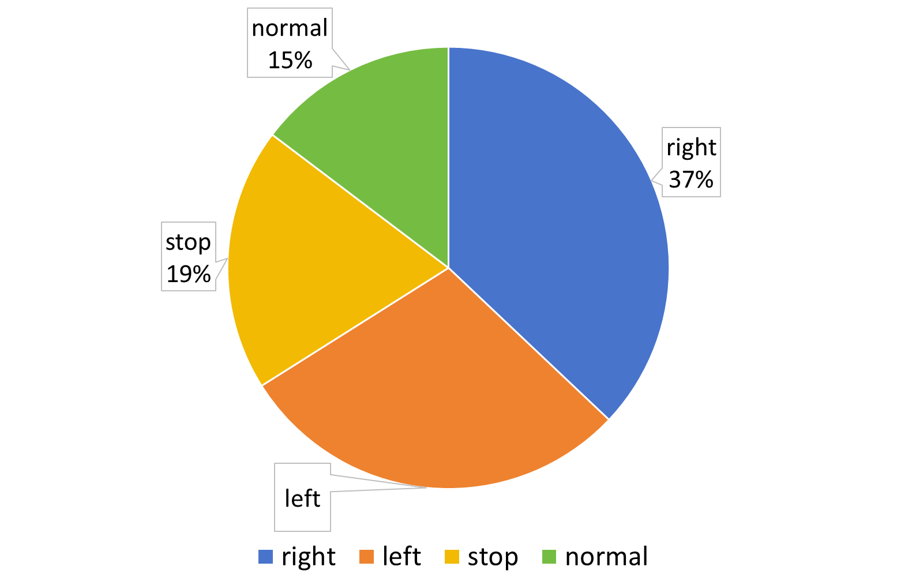

🧠AutoDriveRL overcomes the limitations of traditional end-to-end models and achieves interpretable, cross-task reasoning optimization through task decomposition and reinforcement learning.
🔹 (1) Task Formalization:
Autonomous driving is broken down into four core subtasks—Perception (identifying scene elements), Prediction (anticipating dynamic agent behaviors), Planning (determining path or directional actions), and Behavior (conducting behavior prediction and strategy selection). Each subtask is modeled as a visual question-answering (VQA) problem, with inputs being scene images and task-specific natural language queries, and outputs being interpretable decision responses. The tasks are implicitly coupled through a shared semantic space rather than explicit output dependencies.
🔹 (2) Data Construction:
6K high-quality samples are filtered from the DriveLM dataset. Task difficulty is controlled using the framework score Di, and class balancing strategies are employed to address action distribution imbalance. Low-quality samples (e.g., with annotation errors or duplicate options) are first removed. For each visual question, responses are sampled from multiple vision-language models to compute task-specific quality scores, ensuring consistent and reproducible training data without human labeling.
The following figures present the proportion of various Actions in the dataset as well as the frame score distributions of Align-DS-V, Qwen2.5-VL-7B-Instruct, and Qwen2.5-VL-72B-Instruct.
📊 DriveLM Action Distribution

📈 Ours Action Distribution

📊 Align-DS-V Score Distribution

📈 Qwen2.5-VL-7B-Instruct Score Distribution

📊 Qwen2.5-VL-72B-Instruct Score Distribution

📈 Train Split
🔹 (3) Reward Model Design:
A two-stage reward mechanism is designed. First, a rule-based reward function penalizes outputs that exceed a predefined length or exhibit repetitive sentence patterns. Second, for the remaining candidates, an open-source language model assigns a task-aware quality score based on five criteria: correctness, behavioral understanding, contextual relevance, logic and reasoning, and clarity of reasoning. This reward design enables the model to receive step-wise feedback during training, ensuring reliable behavior decision-making even under degraded visual conditions.
The following figures demonstrate the reward model prompts for each task.